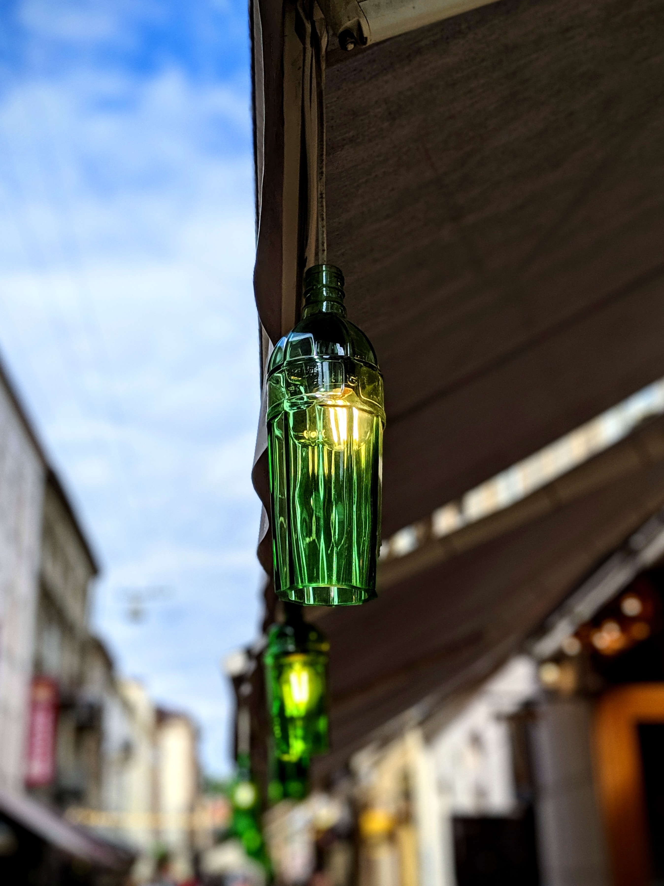

Lviv

Anton Kolomeytsev, Assistant, Department of Architectural Design, Lviv Polytechnic
Yes, a great number of churches were erected in Lviv during the Independence period, but they are mostly too pompous and do not work properly in urban planning. One of the main differences of this temple is that it is not vertical, but horizontal, it is actually a new interpretation of the church "home" type. This building is restrained and at the same time poetically engaging with context. The south façade is well matched to the apartment buildings of the 1970s and 1980s along Lincoln. With its deliberate naivety, this facade is reminiscent of Robert Venturi's postmodern works. On the other hand, the curvilinear roof, which reads from the north, exactly repeats the silhouette of Mount High Castle, visible from behind.
The long roof hangs visually enlarge the small building and form an additional intermediate space, which is formally on the street but is in fact a continuation of the temple. In Ukrainian villages, traditionally only a part of the parishioners listened to worship in the temple, while all others stood under the roof and listened to the priest through the walls, unable to see what was going on inside. It is an impressive element of culture.
Another difference from the modern sacral buildings is that one half of the building is a temple, and the other is a universal hall, where the local community gathers and can hold leisure activities for young people. Orion's church was generally planned as a temporary site, but fortunately became permanent. In the coming years, a large church will appear next to the design of architect Mario Botti, but whether it will be as relevant in this place remains to be seen.
